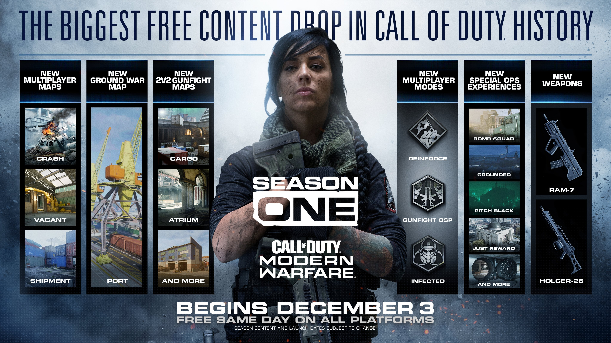

Call of Duty Modern Warfare Season One a inceput in forta
Cel mai mare update al lui Call of Duty Modern Warfare a fost introdus aseara si a dat drumul primului sezon al jocului. Odata cu Season One, vine si noul battle pass cu doua arme noi, patru harti de multiplayer si un trio de misiuni Spec-Ops.
Hartile Atrium si Cargo sunt disponibile pentru modul Gunfight, iar daca te joci Ground War vei avea sansa sa explorezi noua harta, Port. Crash a revenit de asemenea cu cateva schimbari pentru a face harta mai realista, alaturi de o noua linie narativa in care Coalition si Allegiance se lupta pentru o baza Al-Qatala localizata in centrul hartii. Vacat si Shipment vor vedea o revenire la serie si vor fi disponbile in timpul acestui sezon.

Reinforce, primul dintre cele trei moduri noi de joc este deja disponibil, oferind jucatorilor o singura viata in care sa captureze trei steaguri, fiecare dintre acestea permitand echipei sa primeasca respawn. Alt mod este Infected, unde va trebui sa lupti impotriva unei echipe in continua crestere de jucatori infectati si nu in ultimul rand, avem Gunfight OSP care te arunca intr-o lupta Gunfight fara arme sau echipament, acestea venind mai tarziu. Infinity Ward a mai spus si ca ne putem astepta la si mai multe moduri de joc de-a lungul acestui sezon.
De asemenea, si modul Spec Ops vede doua aditii: Just Reward si Strongbox au fost introduse odata cu noul update, alaturi de trei operatiuni clasice. Operatiunile normale vor trimite jucatorii in lupta cu scopul de a lichida un finantator terorist; Classic Ops in schimb, te va arunca intr-o lupta impotriva Generalului Barkov si va trebui sa furi informatii, sa cuceresti o baza aeriana si sa-l opresti pe Barkov care vrea sa arunce in aer un intreg oras.
Battle Pass-ul este in mare parte limitat celor care il cumpara. Sunt insa si cateva nivele gratuite care recompenseaza jucatorii cu elemente precum arma de asalt RAM-7 si mitraliera Holger-26. Battle Pass-ul complet contine 100 de nivele si include un nou operator, Mara.
Challenge-urile Officer Rank ale primului sezon au inceput si poti incepe calatoria catre nivelul 155 prin completarea noilor obiective de sezon. Rank-ul de ofiter este diferit fata de rank-ul normal, dar iti ofera si recompense noi.